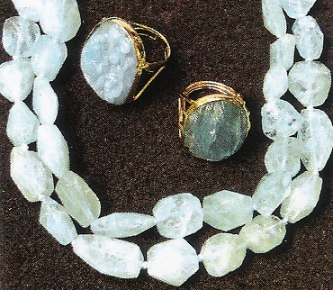
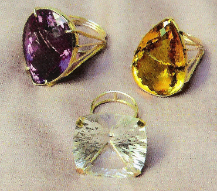

Linea Fashion
|  |  |
|
Questa linea racchiude il meglio dell’artigianato e della tradizione orafa italiana. Si passa da modelli design in oro giallo modernissimi ad altri in oro giallo o bianco creati per pietre da collezione quali ametiste, Citi‘inì, quarzo rosa o bianco, e altri acquamarine incise a mano come vere sculture o altri pezzi unici tutti Made in Italy firmati le Muse. |
This Fashion Line brings together the best of handcrafts and traditional Italian jewelry. It embraces design models in yellow gold as well as modern or white gold creations for collectibles such as ametysts, citrines, rose quarts, white or engraved acquamarina. Unique pieces Made in Italy. |